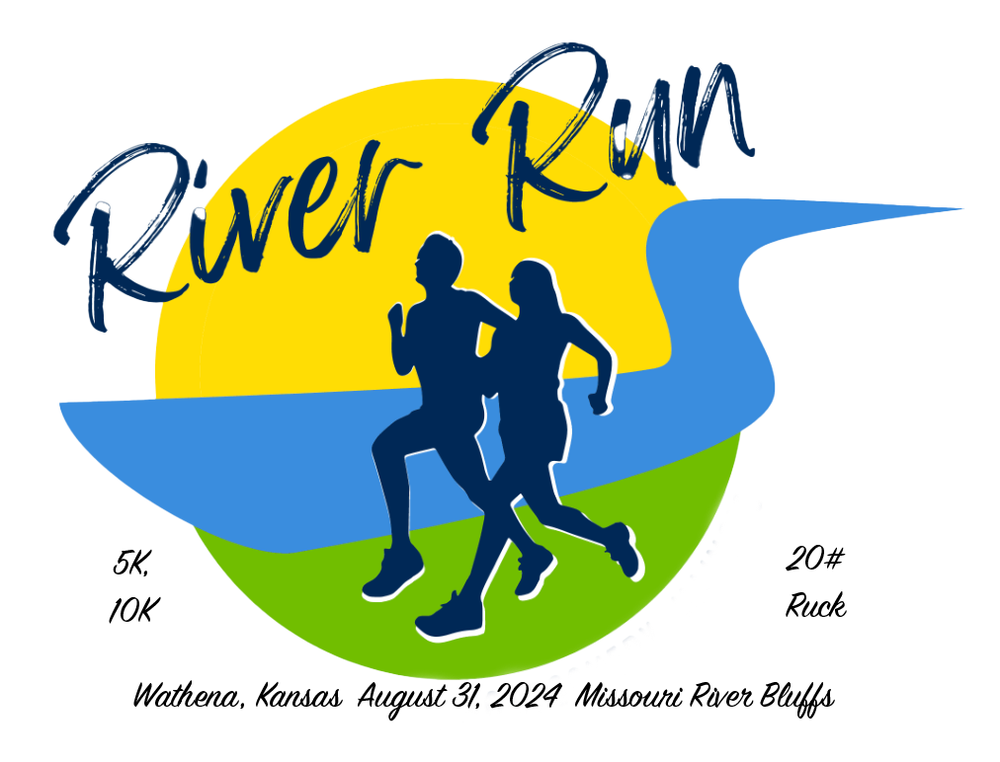

Our 18th annual event just finished successfully. Looking forward to seeing everyone in 2025!!
Please, if you liked the event, spread the word, invite your friends and help build our participant numbers!
| A portion of the proceeds will be donated to the American Cancer Society | |
REGISTER (one of 3 ways):
2024 Printable Registration form
(bring to race day registration or mail in)
Results:
| 2018 5k 10k | 2021 5k 10k |
| 2019 5k 10k | 2022 5k 10k |
| 2020 N/A\ | 2023 5k 10k 20#ruck 5k |
| 2024 5k 10k 20#ruck 5k |
Comments or Questions about this race? Contact: Jim Cera - Race Director